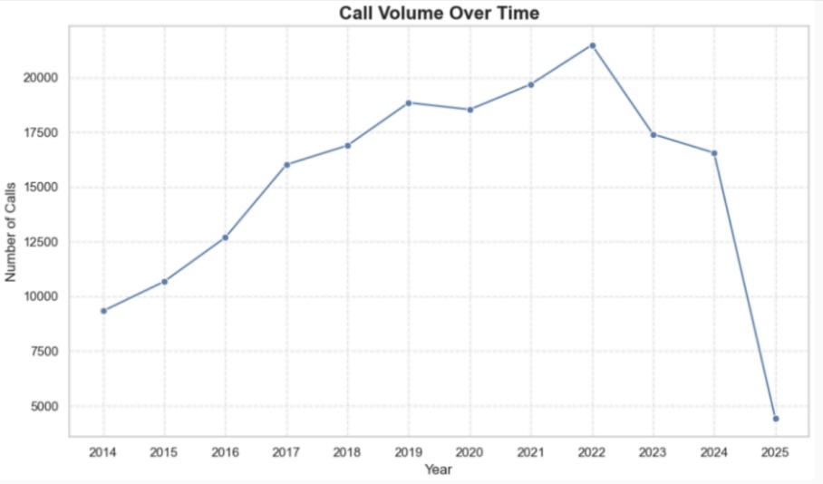
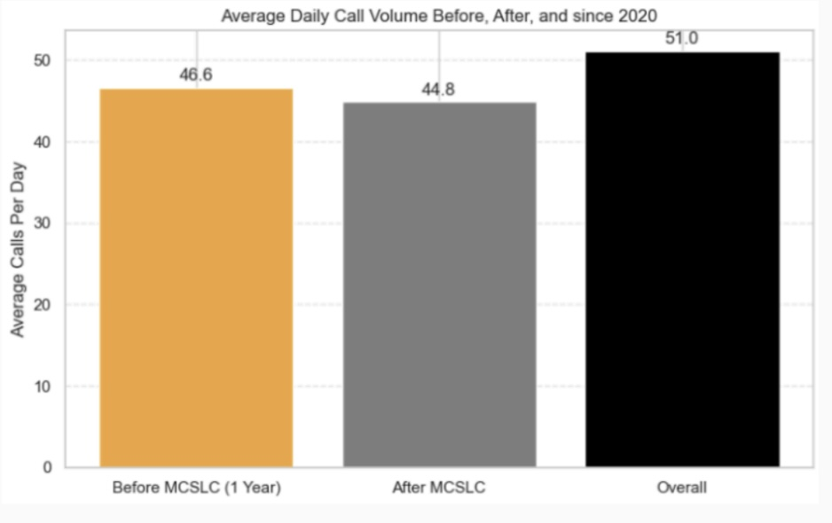
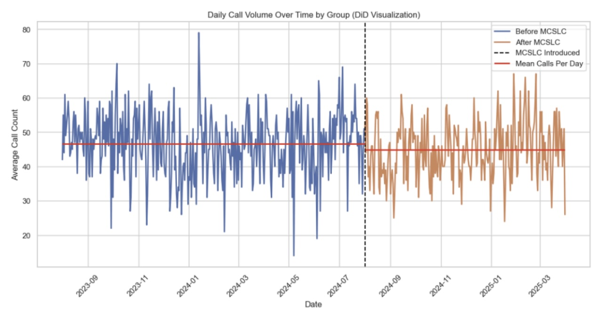
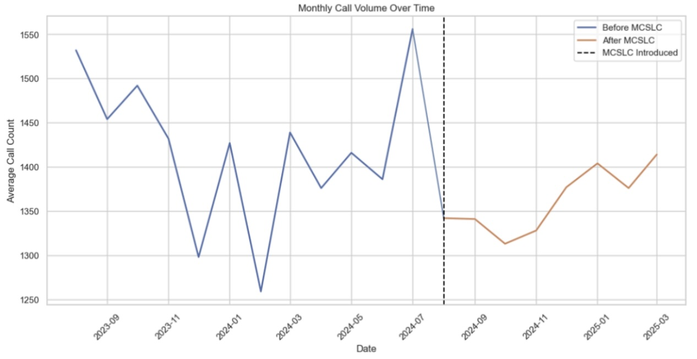

Background
Since 2014, CAHOOTS has acted as an alternative to 911 calls regarding welfare checks, mental health issues, and other emergencies. For over ten years they were the sole operators alongside Eugene PD until August 2024 when Mobile Crisis Services of Lane County (MCSLC) started service in Eugene. MCSLC is similar to CAHOOTS, 911 operators could route calls to MCSLC that they thought might be a better fit than the police. MCSLC aimed to provide services to people experiencing immediate behavioral health crises. Though MCSLC focuses more specifically on mental health calls, the goal of my project was to explore the impact of MCSLC’s services in Eugene on CAHOOTS call volume for the eight months that CAHOOTS and MCSLC were both in service in Eugene from August 2024 - March 2025. By finding these associations, we can better understand how CAHOOTS and MCSLC could work together in the most efficient way to provide services to the people of Eugene.
Research Question
How did CAHOOTS call volume change in August of 2024 with the addition of Mobile Crisis Services of Lane County?
Data
Rori Rofls from CAHOOTS provided the data for this project. It contained twelve individual CSVs of CAD data, one for each year from 2014 to 2025. The columns that I focused on in the data were call time and prime unit. I concatenated all the individual CSVs into one master CSV and then filtered all the rows to only call where CAHOOTS was the primary unit. You can find my notebooks and scripts on GitHub, linked here.
Methods
The first thing I did after combining all the CSVs was begin to explore and clean the data. At the beginning of my project, I wasn’t sure exactly where my project would take me so I cleaned the ‘nature’ column, combining all unique natures that didn’t make over 1% of the data into an ‘other’ category. I also cleaned the zip column in case I wanted to analyze where calls were being called from. Lastly, I used the call time column to engineer new columns of hour, day of the week, month, and year so I could explore CAHOOTS call volume through time. Moving onto my analysis, I plotted the associations between call volume and hour of the day, day of the week, month of the year, and year. The first thing I noticed was the difference in CAHOOTS call volume through the years. From 2019 to 2022 CAHOOTS received a visually significant amount of calls over 2023-2024. I decided to only look at CAHOOTS call volume from August 2023 - August 2024 as pre-MCSLC data and August 2024 - March 2025 as post-MCSLC data. The reason for this is I didn’t want my analysis to be skewed by higher call volumes in 2022. Additionally, I didn’t want to make my time frame any shorter to account for any seasonal bias in call volume. It's important to note that there was only post-MCSLC data for 8 months because those were the only 8 months CAHOOTS and MCSLC were in service in Eugene at the same time. After filtering my data into these 20 months and labeling pre and post-MCSLC. I decided to conduct a two-sample T-test and a difference in differences analysis to determine if the change in call volume was significant and the magnitude of the change. To do this I bootstrapped both daily and monthly call volume means from pre and post-MCSLC to compare against each other.
Results

In the figure above you can see a significant change in the call volume between 2019-2022 and 2023 & 2024, especially from the years 2022 to 2023. As I stated before I didn’t want to use anything more or less than a year’s worth of data before MCSLC was introduced because I didn’t want it to be influenced by these earlier trends in call volume or by any seasonal trends within a year

From 2020 until CAHOOTS stopped their services in Eugene in March 2025, CAHOOTS averaged about 51 calls per day. From August 2023 - August 2024 CAHOOTS only averaged about 46-47 calls per day. Then after MCSLC started services in Eugene CAHOOTS’ call average went down even lower to around 44-45 calls per day. From this day we can see a difference in call volume though the significance of the difference is still unknown.


In my analysis, I found that there was a negative association between MCSLC’s services starting in Eugene and CAHOOTS call volume. My two sample t-tests performed on bootstrapped daily and monthly averages pre and post-MCSLC showed that there was a significant difference in the call volume between the two samples with a 0.00 P-value. My difference in differences analysis then also concluded that there were about 1.7 fewer CAHOOTS calls per day on average and about 60 fewer CAHOOTS calls per month after MCSLC started their service in Eugene with a 0.00 P-value.
Discussion
There are a couple of things to note about my results, as well as further analysis that I would like to do if the data became available. My results showed that the introduction of MCSLC in Eugene resulted in a decrease in CAHOOTS call volume. However, I don’t necessarily think that this is a bad thing. Though CAHOOTS and MCSLC are similar, I think that there’s a way for them to coexist in Eugene that is beneficial to the public. For example, we already know that MCSLC is focused more on mental health calls while CAHOOTS responds to a variety of different calls. The issue right now is there’s not enough data where CAHOOTS and MCSLC were both in service in Eugene. The data that we do have (which is only from CAHOOTS) does not describe the call type clearly and will often combine call types into broader categories. With more time of both agencies operating in Eugene, and clearer data from both Eugene and MCSLC showing what type of calls they’re responding to, I think an analysis could be done that could split up calls and make both agencies run more efficiently.